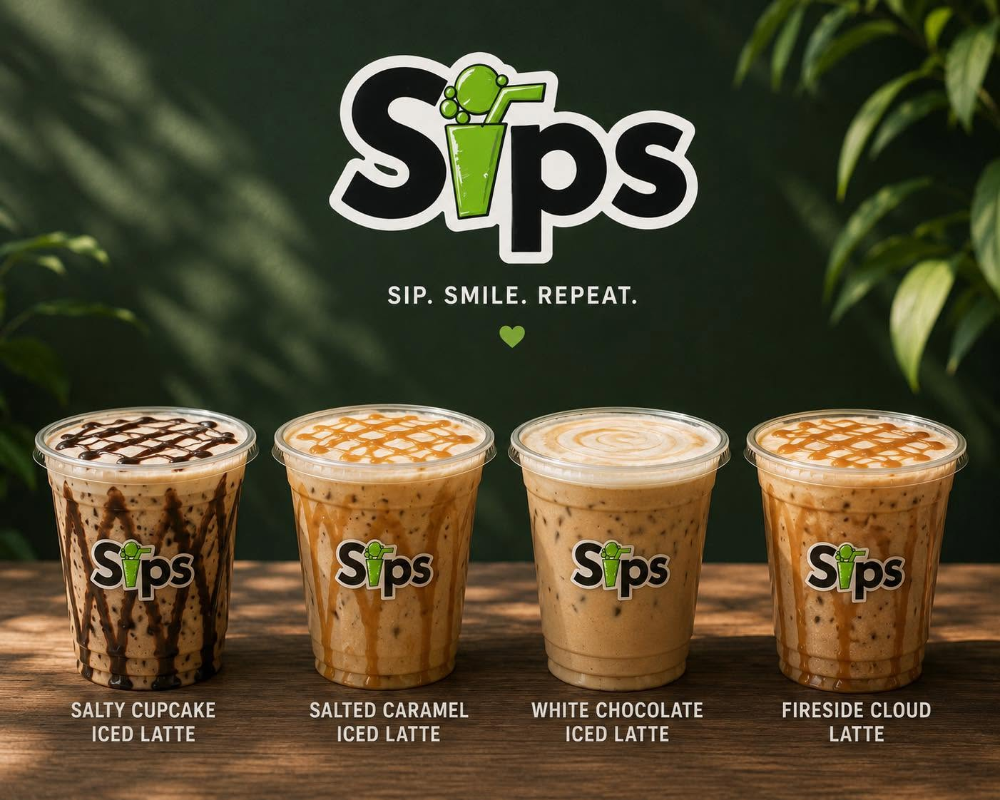

Drive-thru · Sutherlin, Oregon
Good vibes. Cold sips. Sips is a drive-thru in Sutherlin, Oregon for dirty sodas, açaí bowls, smoothies & coffee.
Custom dirty sodas, açaí bowls, smoothies, protein shakes, energy drinks, coffee, and breakfast burritos & sandwiches — made to order at our Sutherlin drive-thru.



Sips in action
Come take a lap
About Sips
Made in Sutherlin
Sips is a locally run drive-thru right on West Central Avenue in Sutherlin, Oregon. We opened in 2025 with a ribbon cutting alongside the Sutherlin Area Chamber, and we've been serving custom dirty sodas, açaí bowls, smoothies, protein shakes, energy drinks, coffee, and breakfast burritos & sandwiches ever since.
Swing through on your way to work, after school, or whenever you need something cold — we'll see you at the window.

This week's specials
We post current specials and new flavors on our Facebook page — check what's pouring today.
Come thirsty
Visit Sips
-
Hours Posted on our Facebook page
-
Drive-thru Order at the window — no need to leave the car.
-
Facebook Sutherlin Sips